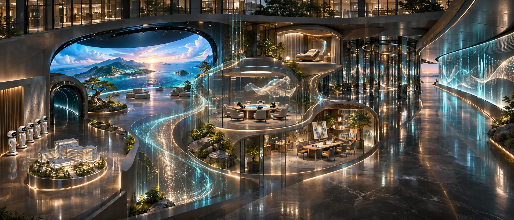

GENISLAND / ZISHENGYUAN
梓笙园 AI 体验中心
全景
开始导览
A WORLD THAT RESPONDS
走进一座
会回应的岛。
面向经专业评估适宜的青少年。沿着真实场地的动线，了解 AI 如何把感受、表达和关系练习变成可参与的空间。
进入空间
↗
概念可视化 · 无临床数据接入
全景 / 00
整条航线，一眼看见
圆桌之后，航线在这里分开
进入隐秘个人岛
走向共创空间
两条路最终在镜映空间汇合
←
→
拖动旋转 · 滚轮缩放 · 点击空间查看细节
按空格暂停导览